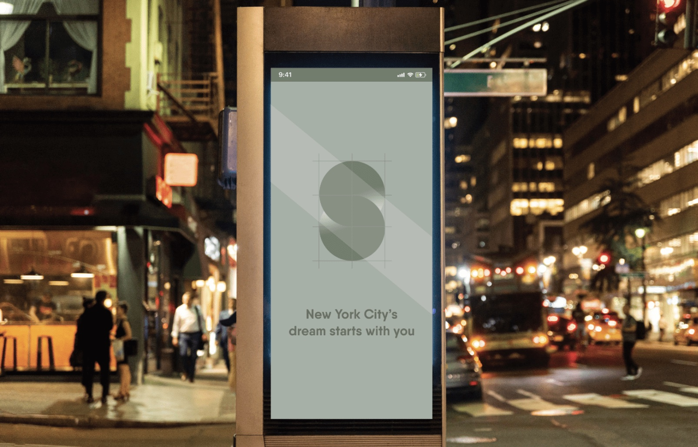
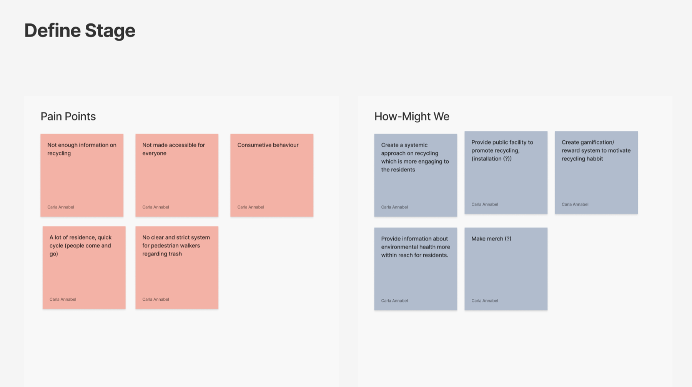
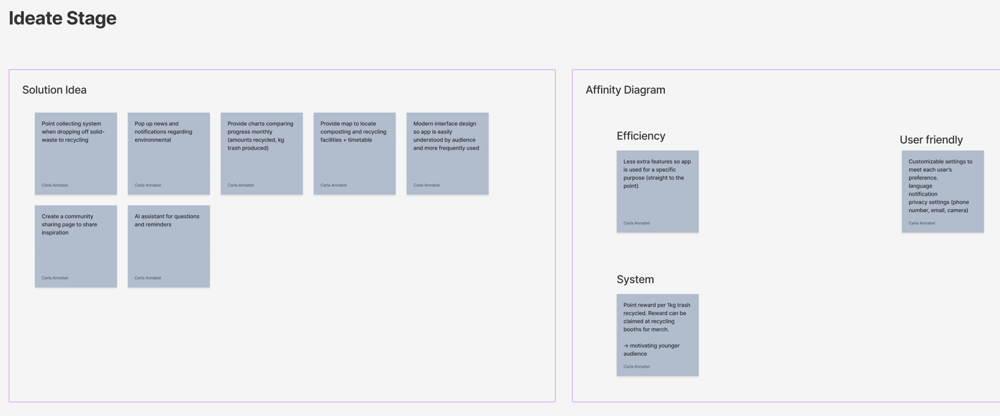
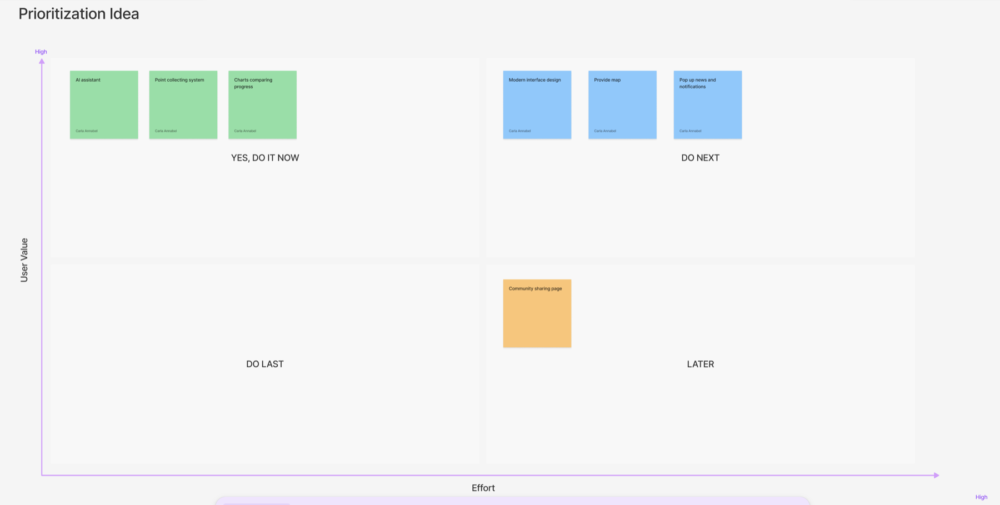
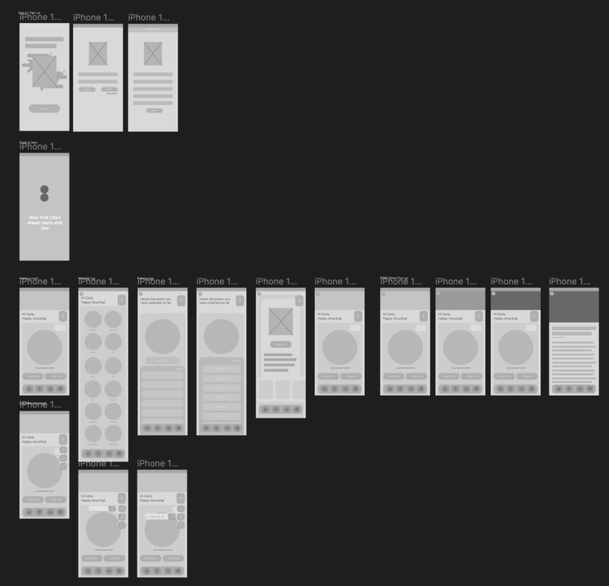
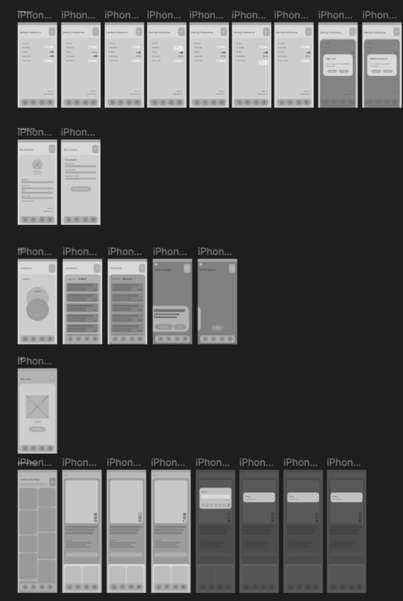
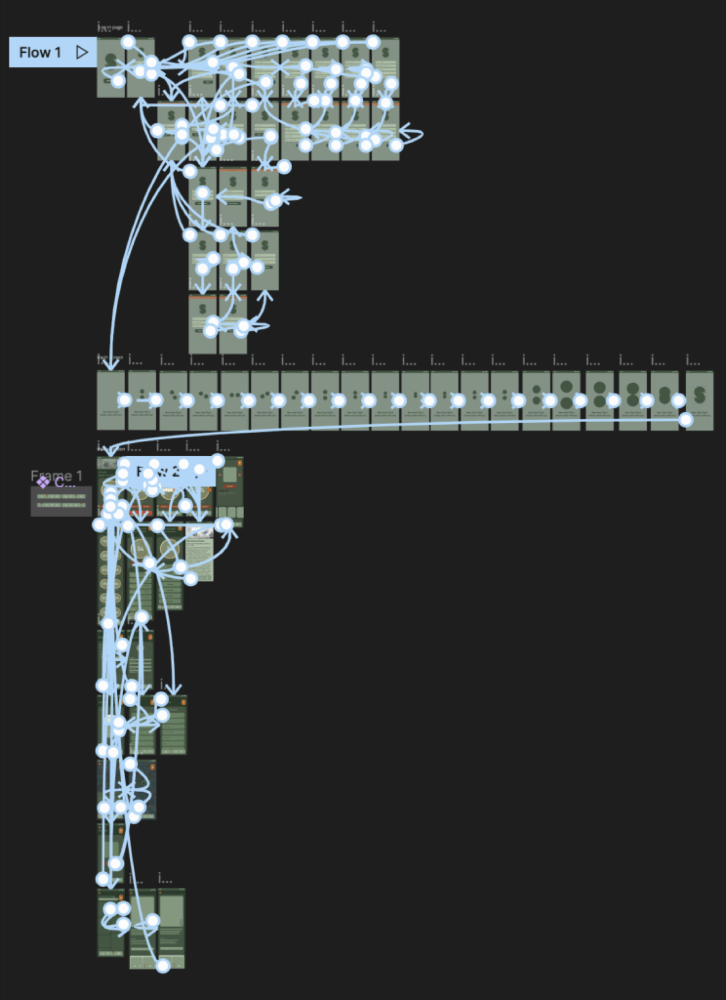
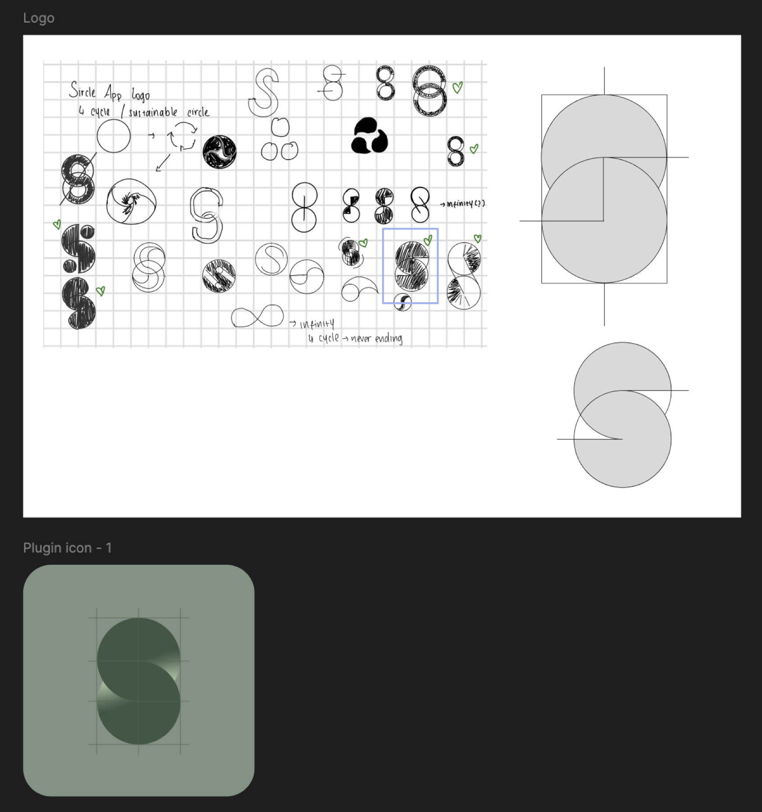
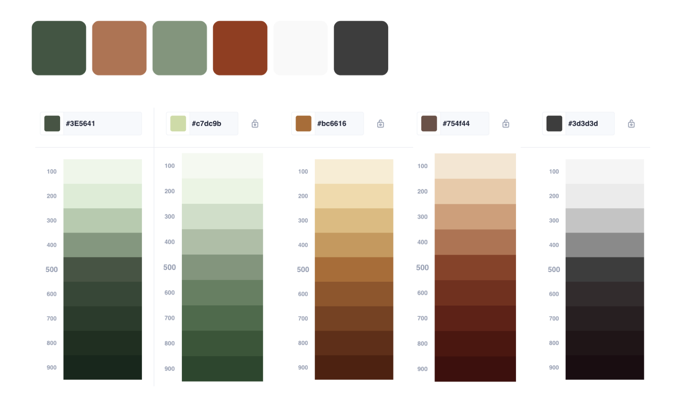
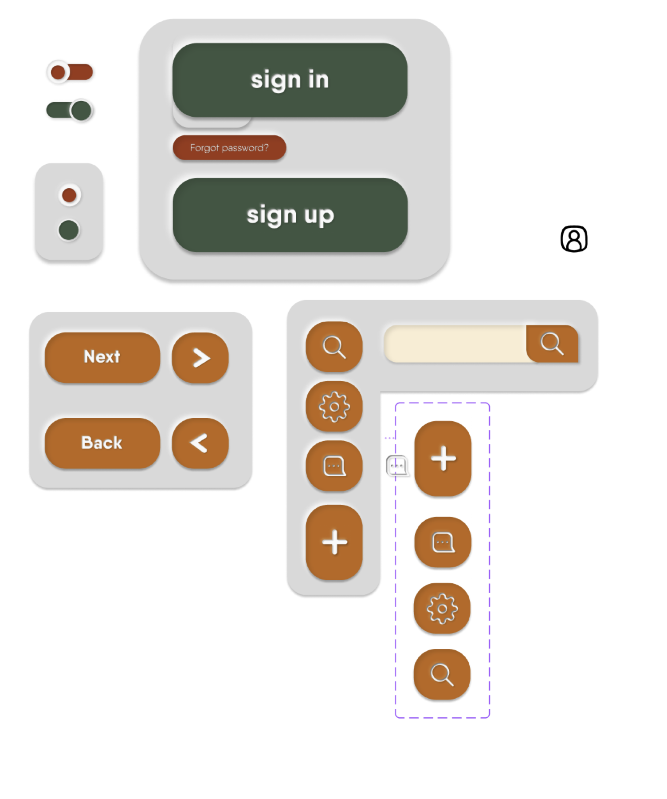

Sircle
An app concept that makes New York City recycling less confusing.
The problemWhy recycling in New York City is harder than it should be.
“In 2022, only 17% of what New Yorkers put out at the curb was recycled or composted. The rest went to disposal.”
New York has a recycling program, but it leaves the work to residents and gives them little help. The rules are hard to find and harder to remember, and on the street there’s no clear system for sorting waste on the go. Many people give up before recycling becomes a habit, especially the students and young professionals who move in and out of the city quickly. Without clear information or a reason to try, recycling becomes an afterthought.
What the research found
Researching DSNY’s program, I found five pain points:
- Pain point 1
Not enough accessible information
- Pain point 2
A system that isn’t built for everyone
- Pain point 3
Consumption-heavy habits
- Pain point 4
A quick-turnover population
- Pain point 5
No clear system for waste on the go
How might we make recycling rewarding, easy to understand, and accessible to every New Yorker, with or without a smartphone?
Why LinkNYCAccess for everyone, including people without smartphones.
“Recycling help shouldn’t depend on owning a phone.”
A phone app alone would leave out the New Yorkers who most need simple, free access to information: older residents, people on limited incomes, people experiencing homelessness, and anyone whose phone is broken, out of data, or out of battery.
LinkNYC kiosks were a natural fit. They’re already on sidewalks across the city, they’re free, and they’re designed for public use. Building Sircle into infrastructure the city already has means no new hardware and no download needed. Residents can log in at any kiosk to find drop-off spots, check the rules, and track their points.
How that changed the design
Designing for a shared public screen changed my approach. The kiosk version uses larger tap targets and type, high-contrast visuals that stay readable outdoors, and shorter flows built for quick sessions while standing on the street.
Logging in is fast (for example, with a phone number and a PIN), and accounts log out automatically to protect privacy on a shared device. The kiosk focuses on the most-needed features (the map, the recycling rules, and your points), while longer activities like the community page stay on the phone.
ProcessFrom pain points to wireframes.

DefinePain points and How Might We questions 
IdeateSolution ideas and affinity diagram 
PrioritizeFeatures by user value and effort 
GreyboxFirst layout explorations 
GreyboxSecond round of layouts 
WireframeThe full prototype flow
BrandingA calm, earthy identity built around the “S” mark.
The name Sircle comes from “circle,” a nod to the cycle at the heart of recycling. I built the logo from two linked circles that form an S and also read as an infinity sign, which carries the idea of a loop that never ends.



Final designA walkthrough of the clickable prototype.
Key features
- Feature 01
Onboarding
Introduces Sircle’s purpose and gets new users set up quickly, so the first visit explains why recycling here is worth it.
- Feature 02
Loading animation
A small branded moment that gives the app personality and makes waiting feel shorter.
- Feature 03
News and articles
Keeps New Yorkers up to date on environmental news and changes to the city’s recycling system, which addresses the “not enough information” pain point.
- Feature 04
Map
Shows nearby recycling and drop-off spots, so disposing of waste properly is easy wherever you are, including on the go.
- Feature 05
Community
A space to ask questions and share tips about recycling, so learning the system doesn’t fall on one person alone.
- Feature 06
Recycling history
A log of everything you’ve recycled, so your effort becomes something you can see.
- Feature 07
Points and rewards
Points earned from recycling can be redeemed for New York merch or discounts at participating local businesses, an incentive aimed at the city’s younger, fast-moving residents.
- Feature 08
Monthly data viz
Compares your recycling month to month and turns a habit into visible progress.
- Feature 09
Settings
Lets users manage their account and preferences.
ReflectionWhat designing Sircle taught me, and what I’d do differently now.
Key learnings
Accessibility is a system decision, not a screen-level fix
My first idea was a phone app. Asking who it left out moved Sircle onto LinkNYC kiosks. The most inclusive choice wasn’t a feature I added. It was changing where the product lives.
Building into existing infrastructure beats building from scratch
Plugging into LinkNYC meant no new hardware and no download, and it reached people where they already are. I learned to look at what a city already has before designing something new.
Motivation has to be designed, not assumed
Plenty of New Yorkers know recycling matters, but knowing doesn’t turn into habit. Points, rewards, and progress tracking gave people a reason to start. Education and the community page gave them a reason to keep going.
Designing for two contexts sharpens priorities
Fitting Sircle onto a public kiosk made me decide which features were essential (the map, the rules, your points) and which could stay on the phone. That constraint made the whole product clearer.
Behavior change needs clarity before incentives
The research kept pointing back to missing information. Rewards only work once people understand the rules, so clear, easy-to-reach guidance had to come first.
If I revisited Sircle today, I’d test the reward system with real users. In a later project, Stroll, participants told me streak-based incentives felt stressful rather than motivating, and I’d want to make sure Sircle’s points feel like a bonus, not a chore.